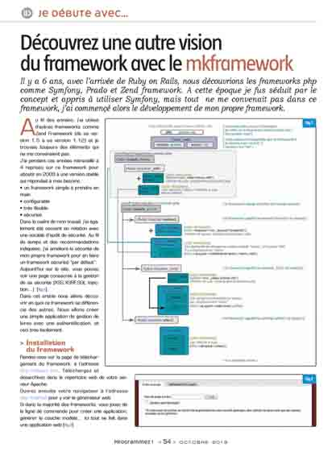
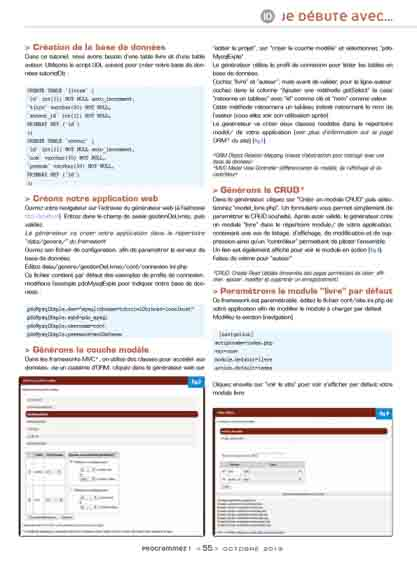

Dans la presse papier:
Magazine Programmez
2019/01/03 Numéro 225 de PROGRAMMEZ
2018/02/02 Numéro 215 de PROGRAMMEZ
2015/04/28 Numéro 185 de PROGRAMMEZ
2014/11/29 Numéro 180 de PROGRAMMEZ
2014/03/29 Numéro 173 de PROGRAMMEZ
2014/01/01 Numéro 170 de PROGRAMMEZ
2013/10/01 Numéro 167 de PROGRAMMEZ
Magazine Linux Pratique
Numéro 90 de Linux Pratique
Numéro 113 de Linux Pratique
Dans la presse papier:
PROGRAMMEZ Numéro 225
2019/01/03 Lien vers le numéro
PROGRAMMEZ Numéro 215
29/01/2018 Lien vers le numéro
PROGRAMMEZ Numéro 185
27/04/2015 Lien vers le numéro
PROGRAMMEZ Numéro 180
30/11/2014 Lien vers le numéro
PROGRAMMEZ Numéro 173
17/12/2014 Lien vers le numéro
PROGRAMMEZ Numéro 170
01/01/2014 Lien vers le numéro

PROGRAMMEZ Numéro 167
05/02/2014 Lien vers le numéro


Linux pratique 90
lien vers le numéro
Linux pratique 113
lien vers le numéro